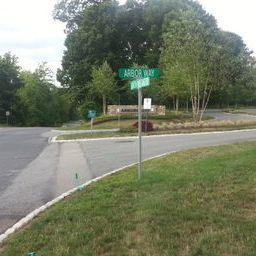
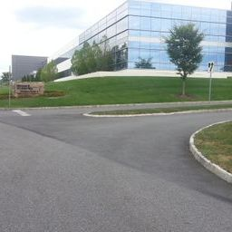
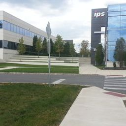
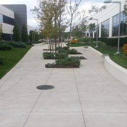
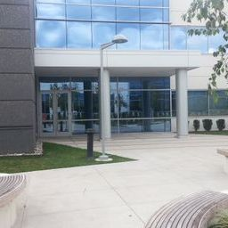
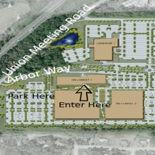

Where:
SkySwitch 751 Arbor Way
     
Suite 150
Blue Bell, PA 19422Driving
Directions:Easiest way is to use this Google Maps Link.
If you are headed West on Germantown pike from the Turnpike turn right at Jolly Road. Turn Right on Township Line Road and take your next left onto Union Meeting Rd by the highway underpass, then right onto Arbor Way. The building will be the first on your right.
There are parking lots on either side of the building, and the main lobby entrances are accesible via the courtyard on the East side, or the small parking area on the West side.
Public
Transportation:The nearest public transit options are SEPTA bus routes 98 and 95.
You may wish to ask on the PLUG mailing list or IRC channel to see if someone can pick you up from one of these bus stops, or you may be able to carpool from your starting point all the way to the meeting location. If you take the bus, ask your driver for help if you are uncertain.
- If you are taking the SEPTA 98 bus, verbally request to the driver that you wish to stop by Union Meeting Road and Arbor Way. When returning, you will need to flag down a bus along Union Meeting Road, as there is no official bus stop. As an alternative, you can walk to the post office.
- If you are taking the SEPTA 95 bus, there is a rather long walk along roads that do not have sidewalks. It is possible to walk along Township Line Road to Union Meeting Road, then to walk to Arbor Way, but this will be at your own risk.
Site Contact:
Kevin McAllister What happened
to Coredial?They were acquired by SkySwitch, but they're still housed in the same offices as before. See here for more infomation.
{kind=link}
{kind=link}
{kind=link}
{kind=link}
{kind=link}
{kind=link}